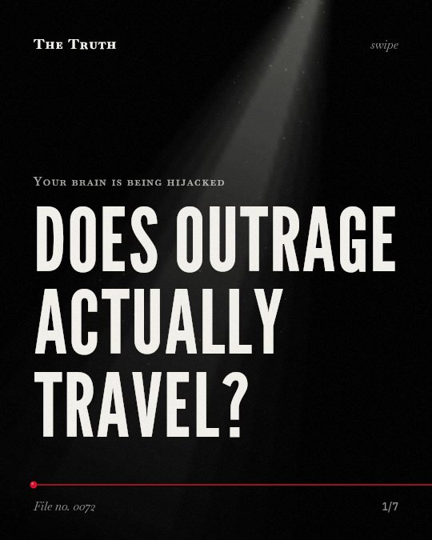

Your brain is being hijacked
Does outrage actually travel?

Moral language increases shares by 13% per word.
For each additional moral-emotional word in a post, the expected number of shares was 13% greater.
Established. Several studies combined, or official data. The evidence is mixed.
What the research found
Moral contagion was bounded by group membership, increasing diffusion more strongly within liberal and conservative networks and less between them.
“moral-emotional language increased diffusion more strongly within liberal and conservative networks, and less between them.”
Study, 2017. Brady et al., Proceedings of the National Academy of Sciences.
For each additional moral–emotional word in a post, the expected number of shares was 13% greater.
“for each additional moral–emotional word in a post, the expected number of shares was 13% greater.”
Meta-analysis, 2025. Brady et al., PNAS Nexus.
The presence of moral-emotional words in messages increased their diffusion by a factor of 20% for each additional word.
“the presence of moral-emotional words in messages increased their diffusion by a factor of 20% for each additional word.”
Study, 2017. Brady et al., Proceedings of the National Academy of Sciences.
People have group-identity-based motivations to share moral-emotional content, which is especially likely to capture attention and is amplified by social-media platform design.
“The MAD model posits that people have group-identity-based motivations to share moral-emotional content, that such content is especially likely to capture our attention, and that the design of social-media platforms amplifies our natural motivational and cognitive tendencies to spread such content.”
Study, 2020. Brady et al., Perspectives on Psychological Science.
Content spreads through group identity.
People have motivations to share moral-emotional content based on group identity. This behavior is amplified by social-media platform design.
The data is inconsistent.
The link between moral-emotional language and content spread depends on the specific dataset and group dynamics. Some studies find this effect to be inconsistent or absent. [LIMITATION]
This part is our reading of the evidence, not a finding.
A phone screen glows in a dark room.
You scroll through a feed late at night. You see a post about a community injustice. You press the share button before you finish reading the first sentence.
The honest summary
The evidence shows a significant but inconsistent link between moral-emotional language and content spread, depending on the specific dataset and group dynamics.
The findings are contradictory, with one large-scale study finding moral contagion to be an inconsistent and often absent phenomenon.
Who decided what you should be outraged about today?
Sources
- William J. Brady, Steve Rathje, Laura K. Globig et al. (2025). Estimating the effect size of moral contagion in online networks: A pre-registered replication and meta-analysis. PNAS Nexus. Meta-analysis, cited 6 times.
- William J. Brady, Molly J. Crockett, Jay Joseph Van Bavel (2020). The MAD Model of Moral Contagion: The Role of Motivation, Attention, and Design in the Spread of Moralized Content Online. Perspectives on Psychological Science. Study, cited 403 times.
- William J. Brady, Julian A. Wills, John T. Jost et al. (2017). Emotion shapes the diffusion of moralized content in social networks. Proceedings of the National Academy of Sciences. Study, cited 1,390 times.
Also read for this file, not quoted
- Steinert (2020). Corona and value change. The role of social media and emotional contagion.
- Burton et al. (2019). How Real is Moral Contagion in Online Social Networks.
- Zhang & Centola (2019). Social Networks and Health: New Developments in Diffusion, Online and Offline.
This file was researched and drafted by software, then checked by rules a model cannot talk its way around: each quote above was matched word for word against the paper, and every number had to appear in it. How files are made.